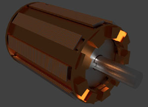
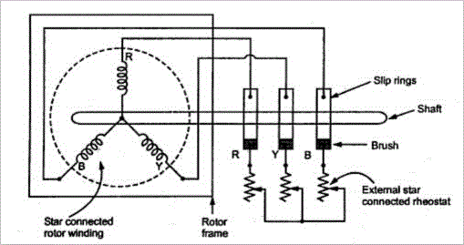

• Stator Frame
• Stator Core
• Stator Winding or Field Winding
• Types
Slip Ring Vs Squirrel Cage Induction Motor
The three phase induction motor is the most widely used electrical motor. Almost 80% of the mechanical power used by industries is provided by three phase induction motors because of its simple and rugged construction, low cost, good operating characteristics, absence of commutator and good speed regulation. In three phase induction motor the power is transferred from stator to rotor winding through induction. The Induction motor is also called asynchronous motor as it runs at a speed other than the synchronous speed.
Like any other electrical motor induction motor also have two main parts namely rotor and stator
- Stator: As its name indicates stator is a stationary part of induction motor. A stator winding is placed in the stator of induction motor and the three phase supply is given to it.
- Rotor: The rotor is a rotating part of induction motor. The rotor is connected to the mechanical load through the shaft.
The rotor of the three phase induction motor are further classified as
- Squirrel cage rotor,
- Slip ring rotor or wound rotor or phase wound rotor.
Depending upon the type of rotor construction used the three phase induction motor are classified as:
- Squirrel cage induction motor,
- Slip ring induction motor or wound induction motor or phase wound induction motor.
The construction of stator for both the kinds of three phase induction motor remains the same and is discussed in brief in next paragraph.
The other parts, which are required to complete the induction motor, are:
- Shaft for transmitting the torque to the load. This shaft is made up of steel.
- Bearings for supporting the rotating shaft.
- One of the problems with electrical motor is the production of heat during its rotation. In order to overcome this problem we need fan for cooling.
- For receiving external electrical connection Terminal box is needed.
- There is a small distance between rotor and stator which usually varies from 0.4 mm to 4 mm. Such a distance is called air gap.
Stator of Three Phase Induction Motor
The stator of the three phase induction motor consists of three main parts :
- Stator frame,
- Stator core,
- Stator winding or field winding.
Stator Frame
Stator Frame
It is the outer most part of the three phase induction motor. Its main function is to support the stator core and the field winding. It acts as a covering and it provide protection and mechanical strength to all the inner parts of the induction motor. The frame is either made up of die cast or fabricated steel. The frame of three phase induction motor should be very strong and rigid as the air gap length of three phase induction motor is very small, otherwise rotor will not remain concentric with stator, which will give rise to unbalanced magnetic pull.
Stator Lamination
Stator Core
The main function of the stator core is to carry the alternating flux. In order to reduce the eddy current loss, the stator core is laminated. These laminated types of structure are made up of stamping which is about 0.4 to 0.5 mm thick. All the stamping are stamped together to form stator core, which is then housed in stator frame. The stamping is generally made up of silicon steel, which helps to reduce the hysteresis loss occurring in motor.
Stator Winding or Field Winding
The slots on the periphery of stator core of the three phase induction motor carries three phase windings. This three phase winding is supplied by three phase ac supply. The three phases of the winding are connected either in star or delta depending upon which type of starting method is used. The squirrel cage motor is mostly started by star – delta stater and hence the stator of squirrel cage motor is delta connected. The slip ring three phase induction motor are started by inserting resistances so, the stator winding of slip ring induction motor can be connected either in star or delta. The winding wound on the stator of three phase induction motor is also called field winding and when this winding is excited by three phase ac supply it produces a rotating magnetic field.
Basic Construction of Induction Motor
Types of Three Phase Induction Motor
- Squirrel cage three phase induction motor: The rotor of the squirrel cage three phase induction motor is cylindrical in shape and have slots on its periphery. The slots are not made parallel to each other but are bit skewed (skewing is not shown in the figure of squirrel cadge rotor beside) as the skewing prevents magnetic locking of stator and rotor teeth and makes the working of motor more smooth and quieter. The squirrel cage rotor consists of aluminum, brass or copper bars (copper bras rotor is shown in the figure beside). These aluminum, brass or copper bars are called rotor conductors and are placed in the slots on the periphery of the rotor. The rotor conductors are permanently shorted by the copper or aluminum rings called the end rings. In order to provide mechanical strength these rotor conductor are braced to the end ring and hence form a complete closed circuit resembling like a cage and hence got its name as "squirrel cage induction motor". The squirrel cage rotor winding is made symmetrical. As the bars are permanently shorted by end rings, the rotor resistance is very small and it is not possible to add external resistance as the bars are permanently shorted. The absence of slip ring and brushes make the construction of Squirrel cage three phase induction motor very simple and robust and hence widely used three phase induction motor. These motors have the advantage of adapting any number of pole pairs. The below diagram shows squirrel cage induction rotor having aluminum bars short circuit by aluminum end rings.

Squirrel Cage Induction Rotor
Advantages of squirrel cage induction rotor-- Its construction is very simple and rugged.
- As there are no brushes and slip ring, these motors requires less maintenance.
Applications:
Squirrel cage induction motor is used in lathes, drilling machine, fan, blower printing machines etc - Slip ring or wound three phase induction motor : In this type of three phase induction motor the rotor is wound for the same number of poles as that of stator but it has less number of slots and has less turns per phase of a heavier conductor.The rotor also carries star or delta winding similar to that of stator winding. The rotor consists of numbers of slots and rotor winding are placed inside these slots. The three end terminals are connected together to form star connection. As its name indicates three phase slip ring induction motor consists of slip rings connected on same shaft as that of rotor. The three ends of three phase windings are permanently connected to these slip rings. The external resistance can be easily connected through the brushes and slip rings and hence used for speed control and improving the starting torque of three phase induction motor. The brushes are used to carry electric current to and from the rotor winding. These brushes are further connected to three phase star connected resistances. At starting, the resistance are connected in rotor circuit and is gradually cut out as the rotor pick up its speed. When the motor is running the slip ring are shorted by connecting a metal collar, which connect all slip ring together and the brushes are also removed. This reduces wear and tear of the brushes. Due to presence of slip rings and brushes the rotor construction becomes somewhat complicated therefore it is less used as compare to squirrel cage induction motor.
Slip Ring Three Phase Induction Motor
Advantages of slip ring induction motor -- It has high starting torque and low starting current.
- Possibility of adding additional resistance to control speed.
Application:
Slip ring induction motor are used where high starting torque is required i.e in hoists, cranes, elevator etc.
Difference between Slip Ring and Squirrel Cage Induction Motor
| Slip ring or phase wound Induction motor | Squirrel cage induction motor |
|---|---|
| Construction is complicated due to presence of slip ring and brushes | Construction is very simple |
| The rotor winding is similar to the stator winding | The rotor consists of rotor bars which are permanently shorted with the help of end rings |
| We can easily add rotor resistance by using slip ring and brushes | Since the rotor bars are permanently shorted, its not possible to add external resistance |
| Due to presence of external resistance high starting torque can be obtained | Staring torque is low and cannot be improved |
| Slip ring and brushes are present | Slip ring and brushes are absent |
| Frequent maintenance is required due to presence of brushes | Less maintenance is required |
| The construction is complicated and the presence of brushes and slip ring makes the motor more costly | The construction is simple and robust and it is cheap as compared to slip ring induction motor |
| This motor is rarely used only 10 % industry uses slip ring induction motor | Due to its simple construction and low cost. The squirrel cage induction motor is widely used |
| Rotor copper losses are high and hence less efficiency | Less rotor copper losses and hence high efficiency |
| Speed control by rotor resistance method is possible | Speed control by rotor resistance method is not possible |
| Slip ring induction motor are used where high starting torque is required i.e in hoists, cranes, elevator etc | Squirrel cage induction motor is used in lathes, drilling machine, fan, blower printing machines etc |
 by
by